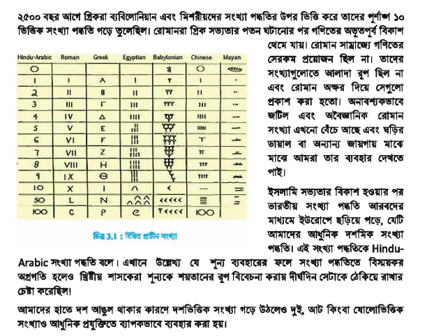
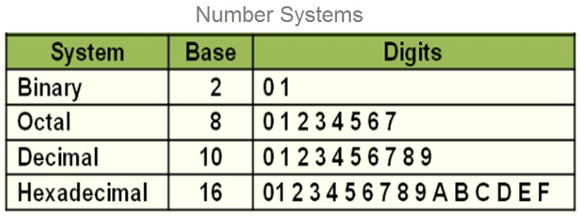
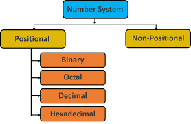
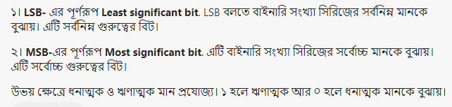
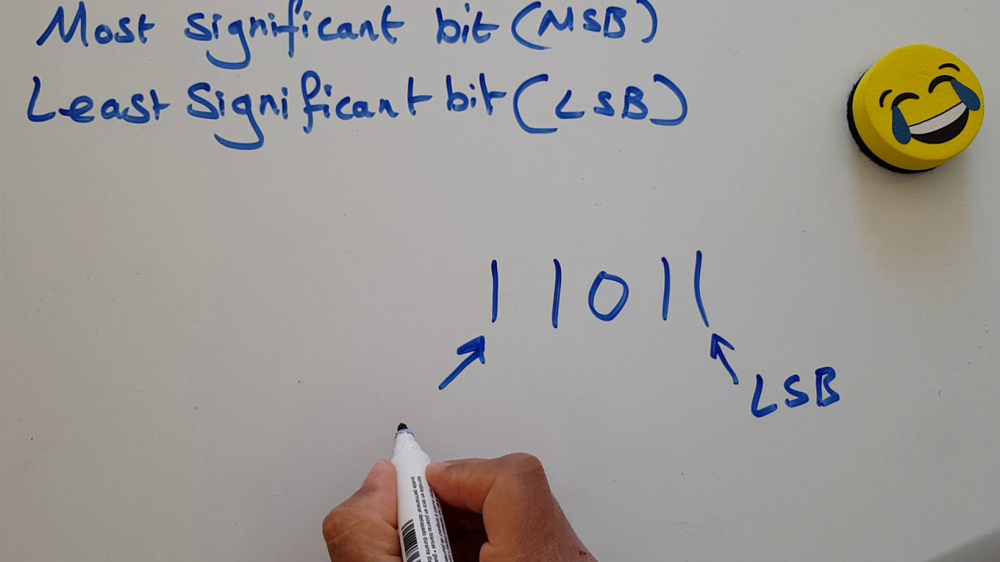
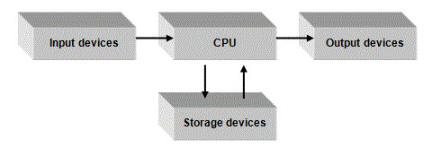

History Of Inventing Numbers (সংখ্যা পদ্ধতি আবিস্কারের ইতিহাস)
Conversion Of Numbers (সংখ্যা পদ্ধতির রূপান্তর)
Addition and Subtraction In Binary System (বাইনারি যোগ বিয়োগ)
Signed Numbers (চিহ্নযুক্ত সংখ্যা)
Code (কোড)
History Of Inventing Numbers (সংখ্যা পদ্ধতি আবিস্কারের ইতিহাস)
Conversion Of Numbers (সংখ্যা পদ্ধতির রূপান্তর)
Addition and Subtraction In Binary System (বাইনারি যোগ বিয়োগ)
Signed Numbers (চিহ্নযুক্ত সংখ্যা)
Code (কোড)

সংখ্যাকে প্রকাশ করার এবং গণনা করার পদ্ধতিকে সংখ্যা পদ্ধতি বলে।
সংখ্যাকে প্রকাশ করার জন্য বিভিন্ন প্রতীক বা চিহ্ন ব্যবহার করা হয়।
এই প্রতীকগুলোকে দুটো ভিন্ন ভিন্ন পদ্ধতিতে ব্যবহার করা যায়।


সংখ্যা পদ্ধতিকে পজিশনাল (Positional) এবং নন-পজিশনাল (Non-Positional ) এই দুটি মূল পদ্ধতিতে ভাগ করা যায়।
নন- পজিশনাল সংখ্যা পদ্ধতি : এই পদ্ধতিতে প্রতীক বা চিহ্নগুলো যেখানেই ব্যবহার করা হোক, তার মান একই থাকবে।
রোমান সংখ্যা হচ্ছে নন-পজিশনাল (Non positional) সংখ্যার উদাহরণ।
যেমন- রোমান সংখ্যায় 5 বোঝানোর জন্য V ব্যবহার করা হয়।
V, VI কিংবা VII এই তিনটি উদাহরণে v তিনটি ভিন্ন জায়গায় বসেছে, কিন্তু প্রতি ক্ষেত্রেই V চিহ্নটি 5 বুঝিয়েছে।
তথা পজিশনাল সংখ্যা পদ্ধতির ন্যায় / যতই ডান হতে বাম দিকে সরতে (স্থান পরিবর্তন) থাকুক না কেন তার স্থানীয় মানের (একক, দশক, শতক ইত্যাদির ন্যায়) কোন পরিবর্তন হয় না।
এর কারণ হলো নন-পজিশনাল (অস্থানিক) সংখ্যা পদ্ধতিতে স্থানিক মানের অনুপস্থিতি।
প্রাচীনকালে যখন সংখ্যাতত্ত্ব সেভাবে গড়ে উঠেনি তখন নন-পজিশনাল সংখ্যা পদ্ধতির প্রচলন ছিল।
পজিশনাল সংখ্যা পদ্ধতি : এই পদ্ধতিতে চিহ্ন বা প্রতীকটিকে কোন অবস্থানে ব্যবহার করা হচ্ছে তার উপর মানটি নির্ভর করে।
আধুনিক সংখ্যাতত্ত্ব গড়ে উঠার পর পজিশনাল (Positional) সংখ্যা পদ্ধতির প্রচলন শুরু হয়েছে।
আমাদের প্রচলিত দশমিক পদ্ধতি হচ্ছে পজিশনাল সংখ্যা পদ্ধতির উদাহরণ। কারণ 555 সংখ্যাকে ডান দিকের প্রথম অঙ্কটি 5 সংখ্যাকে বোঝালেও তার বামেরটি 50 এবং এর বামেরটি 500 সংখ্যাকে বোঝাচ্ছে।
এটি 10 ভিত্তিক সংখ্যা এবং প্রত্যেকটি অবস্থানের একটি মান রয়েছে।
ডান দিকের প্রথম অঙ্কটির মান 1, বামেরটি 10, এর বামেরটি 100 এভাবে আগের অবস্থান থেকে আগের অবস্থান সবসময়েই 10 গুণ বেশি।
যদি এটি ৪ ভিত্তিক সংখ্যা হতো তাহলে পরের অবস্থান আগের অবস্থান থেকে ৪ গুণ বেশি হতো।
16 ভিত্তিক সংখ্যা হলে প্রতিটি অবস্থান আগের অবস্থান থেকে 16 গুণ বেশি হতো।
Binary
Octal
Decimal
Hexa-decimal
বাইনারি সংখ্যা পদ্ধতি বা দ্বিমিক সংখ্যা পদ্ধতি (ইংরেজি: Binary number system) একটি সংখ্যা পদ্ধতি যাতে সকল সংখ্যাকে কেবলমাত্র ০ এবং ১ দিয়ে প্রকাশ করা হয়।
এই সংখ্যা পদ্ধতির ভিত্তি দুই।
ডিজিটাল ইলেকট্রনিক যন্ত্রপাতির লজিক গেটে এই সংখ্যাপদ্ধতির ব্যাপক প্রয়োগ রয়েছে। তাছাড়া প্রায় সকল আধুনিক কম্পিউটারে বাইনারি সংখ্যা পদ্ধতি ব্যবহার করা হয়।
বাইনারি পদ্ধতিতে প্রতিটি অঙ্ককে বিট বলা হয়।
Bi শব্দের অর্থ ২
Binary = 2 (অতএব বাইনারি বলতে আমরা ২ বুঝি)
Binary Base = 2 [0,1]
579 (10) = Five Hundred Seventy Nine
579 (8) = Five, Seven, Nine
Base(ভিত্তি) না দিলে কোন নাম্বার সিস্টেম বুঝা যাবে না।
যেমন '101' এটা বাইনারি, অক্টাল, ডেসিমাল, হেক্সা-ডেসিমাল সবই হতে পারে।


Integer (পূর্ণসংখ্যা) & Fraction (ভগ্নাংশ)
Radix Point = . Example : 5.5
Base (ভিত্তি) দিতে হবে। এবং সঠিক টাই দিতে হবে।
Binary Digits উঠানোর সময় তাড়াহুড়া করে ভুল করা যাবে না।
LSB & MSB
(Left - Right)
(Right - Left)
(Up - Down)
(Down - Up)
Binary Math করার সময় খাতা Landscape করে নিতে হবে।
All digits are individual except Decimal Number System
Example : 10 (16) = 1,0 Not 10
D-B / D-O / D-H.D / B-D / O-D / H.D-D (এসব Conversion Base দিয়ে করতে হবে)
যেহেতু Decimal Number Base মূলহীন (এক্ষেত্রে) তাই অন্য Number System Base ব্যাবহার করতে হবে।
Base যদি সমান চিহ্নের (Equal-Sign) বামে হয় তবে গুন করতে হবে ।
আর যদি ডানে হয় তবে ভাগ করতে হবে।
B-O / O-B / B-H.D / H.D-B (এসব Conversion করার সময় 'Power Of 2') ব্যাবহার করতে হবে।
O-B / B-O করার সময় '4-2-1' এর মাধ্যমে করতে হবে।
H.D-B / B-H.D করার সময় '8-4-2-1' এর মাধ্যমে করতে হবে।
1 Octal Digit = Binary 3 Digits
Example : 5 = 101
Or
3 Binary Digits = 1 Octal Digit
Example : 101 = 5
1 Hexa-decimal Digit = Binary 4 Digits
Example : 5 = 0101
Or
4 Binary Digits = Hexa-decimal Digit
Example : 0101 = 5
Find-out Decimal Value From Binary Without Power Of 2
Hexa-Decimal Value Carefully Write
| Number System | Set Of Digits | Base (ভিত্তি) | Example(s) |
|---|---|---|---|
| Base-2 | 0,1 | 2 | 101 (2) |
| Base-3 | 0,1,2 | 3 | 121 (3) |
| Base-4 | 0,1,2,3 | 4 | 33 (4) |
| Base-5 | 0,1,2,3,4 | 5 | 1234 (5) |
| Base-6 | 0,1,2,3,4,5 | 6 | 154(6) |
| Base-7 | 0,1,2,3,4,5,6 | 7 | 564(7) |
| Base-8 | 0,1,2,3,4,5,6,7 | 547 | 101 (8) |
| Base-9 | 0,1,2,3,4,5,6,7,8 | 9 | 780(9) |
| Base-10 | 0,1,2,3,4,5,6,7,8,9 | 10 | 890(10) |
| Decimal - Binary |
| Decimal - Octal |
| Decimal - Hexa-decimal |
| Binary - Decimal |
| Octal - Decimal |
| Hexa-decimal - Decimal |
| Binary - Octal |
| Binary - Hexa-decimal |
| Octal - Binary |
| Hexa-decimal - Binary |
| Octal - Hexa-decimal |
| Hexa-decimal - Octal |
Binary Addition Example : 1 1 1 1 1 A = 10
B = 11
C = 12
D = 13
E = 14
F = 15
রাহুল প্রাক নির্বাচনী পরীক্ষায় পেয়েছে (A2.8016)
এবং নির্বাচনী পরীক্ষায় পেয়েছে (57.528)|
সে সর্বমোট কত পেয়েছে দশমিক সংখ্যায় প্রকাশ কর।
A2.08 (16) = ? (2) 57.52 (8) = ? (2)
86 (10) + 1010010 (2) + A26 (16)
1 1 0 1 * 1 0 1
1 1 0 ) 1 0 1 0 1 0 (
Bit
Decimal To Binary
Binary Addition
Sign Bit
Carry Bit / Carry Overflow
1's Compliment (0➡️1)&(1➡️0)
2's Compliment💡
1-2's Compliment (২ এর পরিপূরক)
2-Plus To Minus / Minus To Plus (করার ক্ষেত্রে দরকার হয়)
3-১ এর পরিপূরকের সঙ্গে ১ যোগ করে সাধারণত করা হয়।
তবে শর্টকাট নিয়মেও করা যায়।
(+5) + (-5) Same
Rules (For Addition & Sub..)
Equation
Others Number System

On Keyboard :
Letter
Digits / Number 💡
The main difference between digit and number is that a digit is a single numerical symbol,
whereas a number can contain a single digit or a combination of more digits.
Numeric Sign / Number sign
Special Characters